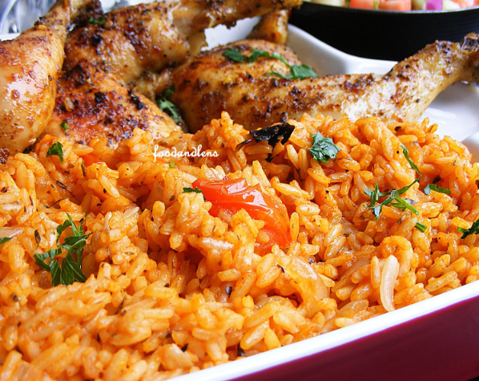

Jollof Rice Recipe

Description
There are hundreds of different dishes in the world, but there is only a handful that has enough flavor for me to eat alone.
A bowl of Jollof rice is one of those dishes. You know, the kind where you can taste the spoon or fork after you’re done with the food? I mean, you’d want to lick it clean. Jollof is deliciously addictive.
Ingredients:
- Long Grain Rice
- Tomatoes
- Onions
- Oil
- Chicken or Beef Stock
- Stock Cubes
- Garlic and Ginger
Procedure:
- Season chicken with blended garlic and ginger, onions, salt and white pepper. Cook the chicken with seasonings and water to make chicken stock.
- Remove chicken from stock and either fry or broil in the oven until golden brown.
- Blend tomatoes and cook down into a paste.
- Saute onions and add in cooked down tomatoes and tomato sauce or paste. Cook until the tomatoes shrink and start sticking to the bottom of the pot.
- To the pot add dried thyme, blended garlic and ginger, and white pepper. Stir to combine.
- Add chicken stock and water to the pot. Add in salt and chicken bouillon powder.
- Add washed rice to the pot, cover and cook on low heat until the rice is fluffy.
- Add carrots and green beans to rice if so desired. Serve the Jollof Rice with the chicken.